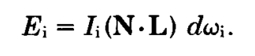
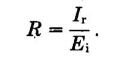
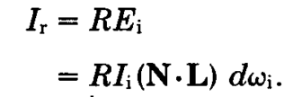
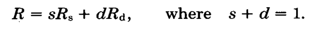
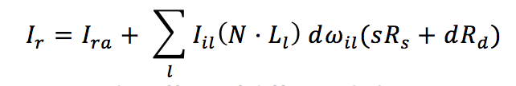
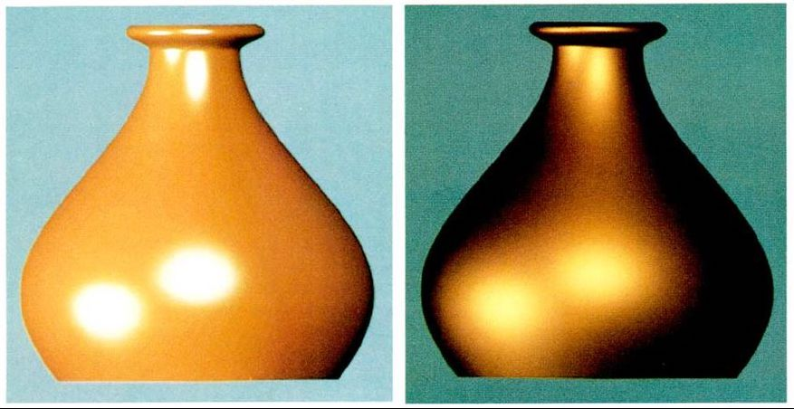

Cook-Torrance Model
Cook-Torrance Model
Published in 1982
The Cook-Torrance model presents a reflectance model that is more general than previous models. [1] Previous models such as Phong gives a plastic appearance, and Cook-Torrance helps to avoid that.
As in previous models, reflection is treated to have three components: ambient, diffuse and specular.
- Ambient – light is assumed to be uniformly incident from the environment and reflected equally in all directions.
- Diffuse – light is scattered equally in all directions.
- Specular – light is concentrated around the mirror direction. (represents highlights)
Figure 1 : the geometry of reflection [1]
The energy of the incident light is expressed as energy per unit time and per unit area of the reflecting surface. The intensity is similar, but is expressed per unit projected area and per unit solid angle. The formula for the energy of incident light is below.
- Ei is the energy of the incident light.
- Ii is the intensity of the incident light.
- N is the unit surface normal.
- L is the unit vetor to the direction of the light source.
- dωi is the solid angle of beam of incident light.
Figure 2 : visualisation of reflection [2]
Since the incoming beam is likely to be reflected over a wide range of angles as shown on figure 2, the reflected intensity in any given direction depends on the incident energy. The ratio of the reflected intensity in a given direction to the incident energy from another direction is called the bidirectional reflectance, R, which is given by:
The reflected intensity reaching the viewer is therefore
- Ir is the intensity of reflected light.
- R is bidirectional reflectance.
The bidirectional reflectance can be split into two components: specular and diffuse. So the bidirectional reflectance can be expressed as:
- s is the fraction of reflectance that is specular.
- d is the fraction of reflectance that is diffuse.
- Rs is the specular bidirectional reflectance.
- Rd is the diffuse bidirectional reflectance.
In addition to direct illumination, we also need to consider ambient reflection, which is just all light that is not from a specific light source. For simplicity, it is assumed that the ambient illumination is uniformly incident. The reflected intensity due to ambient illumination is Ira.
Taking this into account, the total intensity of the light reaching the observer is the sum of the reflected intensities from all light sources plus the reflected intensity from any ambient illumination.
This formula takes into account the effect of different light sources with different intensities and different projected areas which may illuminate a scene.
Advantanges of the Cook-Torrance model
Cook-Torrance is better than older models because it was able to avoid giving objects a plastic appearance. This is due to the ambient, diffuse and specular components having better computed colours. The colours also vary if the material is not homogenous.
Unlike Phong's model, the Cook-Torrance model is also physically accurate - it takes into account the energy of the incident light and makes sure that the energy of the reflected light is smaller or equal to that.
Figure 3 : Rendering using Phong (left) and Cook-Torrance (right) [1]
Limitations of the Cook-Torrance model
This model does not consider the reflection of light from other objects in the environment.
Furthermore, there are parts of the computation (e.g. calculating colours shift with Fresnel equation) that are computationally more expensive than previous models. However, this can be avoided by using an approximation procedure or a lookup table.
[1] R. L. Cook and K. E. Torrance, “A reflectance model for computer graphics,” ACM SIGGRAPH Comput. Graph., vol. 15, no. 3, pp. 307–316, 1981.
[2] "Physical based rendering: Cook-Torrance", Codinglabs.net, 2018. [Online]. Available: http://www.codinglabs.net/article_physically_based_rendering_cook_torrance.aspx. [Accessed: 09- Mar- 2018].